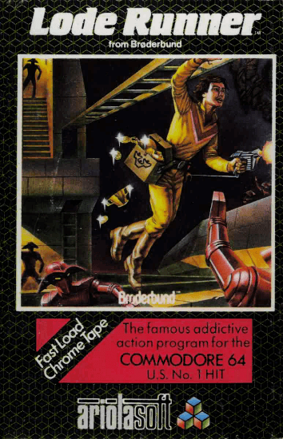

Lode Runner
Lode Runner is a classic puzzle-platform video game developed by Douglas E. Smith and released in 1983. Players control a character who must collect all the gold in a level while avoiding enemies and using strategically placed ladders and platforms. Known for its innovative gameplay and level editor, Lode Runner has become an iconic title in the history of video games.